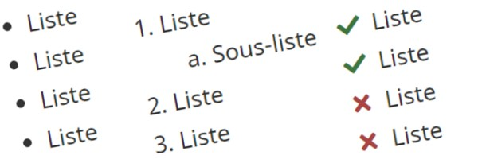

Table des matières – Système de conception GCWeb
Utilisez une table des matières pour créer des liens vers des sous-sections du contenu d'une même page.
Sur cette page
Quand l'utiliser
Utilisez une table des matières pour fournir :
- une liste de liens qui mènent à des sous-sections de la même page
- une autre méthode pour accéder à un contenu spécifique de la page, sans utiliser la barre de défilement
- un aperçu des longs documents qui existent en tant que page unique
Utilisez-la quand
- un défilement excessif (plus de deux ou trois défilements) est nécessaire pour visualiser l'ensemble du contenu de la page
- la page est divisée en sous-sections, chacune ayant son en-tête
Ne l'utilisez pas quand
- le document est réparti sur plusieurs pages Web
- la page se compose uniquement de tableaux, d'images, etc., sans en-têtes
Comment l'appliquer
Lorsqu'elle contient des liens vers des en-têtes plus bas sur la même page
La section table des matières doit être incluse lorsqu'il y a plus de deux en-têtes/sous-en-têtes et que vous devez faire défiler la page pour en voir tout le contenu.
Utilisation appropriée
- Utilisez l'entête Sur cette page pour la table des matières afin de la distinguer du reste du contenu de la page et d'assurer la cohérence du site.
- La section Sur cette page doit être placée sous le
h1et la brève description de la page, mais avant le début du contenu principal de la page.- Dans certains cas, d'autres éléments, tels que des images ou des alertes, peuvent également être placés avant la table des matières.
- Présentez les liens sous forme de liste : des puces pour une liste non ordonnée, des chiffres pour une liste ordonnée.
- Utilisez des styles de liens standard pour vous assurer que les liens sont des éléments sur lesquels on peut cliquer.
- Présentez la table des matières en l'alignant à gauche sous forme de liste verticale plutôt qu'en utilisant une disposition en colonnes.
Utilisation inappropriée
- Évitez les listes qui ont plus de trois niveaux.
- Incluez principalement des en-têtes
h2dans la table des matières. - Si le contenu nécessite plus de détails et qu'il y a des bénéfices pour l'utilisateur, incluez les en-têtes
h3de façon facultative dans la table des matières.
- Incluez principalement des en-têtes
Apparence
Code HTML
<h2 class="h3">Sur cette page</h2>
<ul>
<li><a href="h-1">Premier H2 sur la page</a></li>
<li><a href="h-2">Deuxième H2 sur la page</a>
<ul>
<li><a href="h-2-1">Premier sous-en-tête H3</a></li>
<li><a href="h-2-1">Deuxième sous-en-tête H3</a></li>
</ul></li>
<li><a href="h-3">Troisième H2 sur la page</a></li>
</ul>Lorsqu'elle est utilisée comme page d'index pour renvoyer à d'autres pages
Placez la table des matières sur sa propre page pour servir de répertoire pour les sous-pages d'un produit spécifique.
Utilisation appropriée
- Utilisez l'en-tête Table des matières pour la table des matières.
- Utilisez des listes en colonnes si les titres des liens ont l'air surchargés dans la conception par défaut ou si plusieurs colonnes de liens ont l'air d'utiliser toute la largeur disponible.
Utilisation inappropriée
- Évitez les listes à plusieurs colonnes qui ont plus d'un niveau. Si plusieurs niveaux et plusieurs colonnes sont nécessaires :
- divisez les listes à colonnes multiples en groupes distincts
- placez-les dans des grilles, de sorte que les niveaux imbriqués soient toujours associés à la liste parent
Apparence
Code HTML
<h2 class="h3 mrgn-tp-0">Table des matières</h2>
<ul class="colcount-sm-2" class="colcount-sm-3">
<li><a href="#">Première page</a>
<ul>
<li><a href="#">Sous-section 1</a></li>
<li><a href="#">Sous-section 2</a></li>
</ul>
</li>
<li><a href="#">Deuxième page</a></li>
<li><a href="#">Troisième page</a></li>
<li><a href="#">Quatrième page</a></li>
<li><a href="#">Cinquième page</a></li>
<li><a href="#">Sixième page</a></li>
</ul>Composantes complémentaires
Des fonctionnalités et des comportements supplémentaires sont disponibles.
-

- Date de modification :